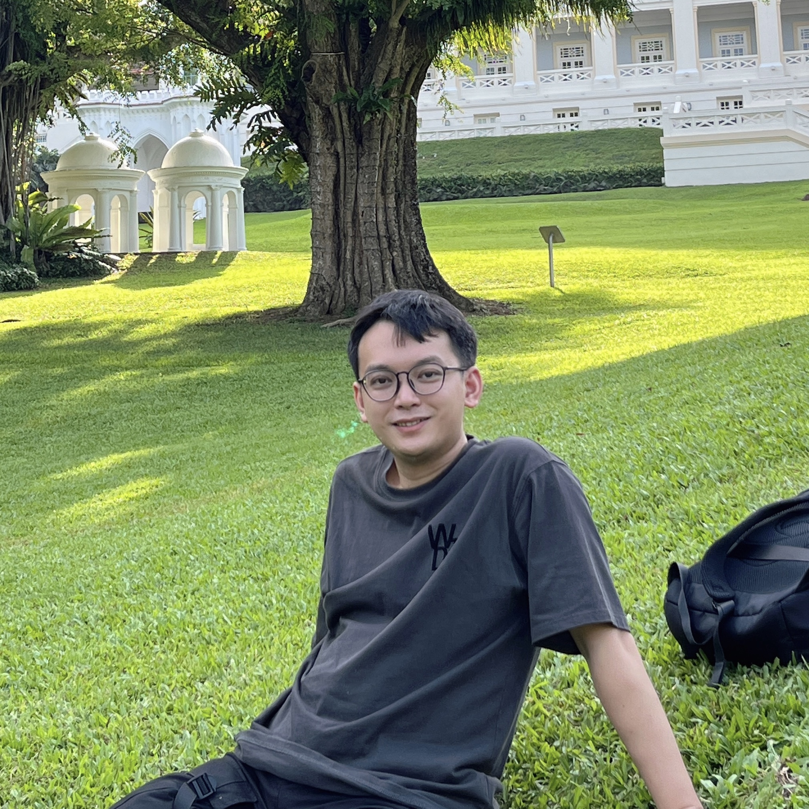

Lei (Demo) Wang
I am a 4th-year Ph.D. student at SMU and advised by Prof. Ee-Peng Lim, where I work on math word problem solving, large language models, and recommendation system, etc. Before that, I got my degree of master at UESTC, where I was co-advised by Prof. Xing Xu and Prof. Dongxiang Zhang. I got my bachelor's degree at the school of EE, UESTC. .
Email /
Google Scholar /
News
05/2023, 1 paper have been accepted by ACL 2023.
04/2023, 1 paper have been accepted by SIGIR 2023.
03/2023, LLM-Adapters have been released at LLM-Adapters.
11/2022, 2 papers have been accepted by AAAI 2023.
Research
I'm interested in devleoping cutting edge research for large language models, math word problem solving, and recommendation system.
Pre-prints:
- Zero-Shot Next-Item Recommendation using Large Pretrained Language Models
Lei Wang, Ee-Peng Lim
Pre-print 2023 | paper | code
- LLM-Adapters: An Adapter Family for Parameter-Efficient Fine-Tuning of Large Language Models
Zhiqiang Hu, Yihuai Lan, Lei Wang, Wanyu Xu, Ee-Peng Lim, Roy Ka-Wei Lee, Lidong Bing, Xing Xu, Soujanya Poria
Pre-print 2023 | paper | code
- ICL-D3IE: In-context learning with diverse demonstrations updating for document information extraction
Jiabang He, Lei Wang, Yi Hu, Ning Liu, Hui Liu, Xing Xu, Heng Tao Shen
Pre-print 2023 | paper
Conference:
- Plan-and-Solve Prompting: Improving Zero-Shot Chain-of-Thought Reasoning by Large Language Models
Lei Wang, Wanyu Xu, Yihuai Lan, Zhiqiang Hu, Yunshi Lan, Roy Ka-Wei Lee and Ee-Peng Lim
ACL 2023 | paper
- Towards Distribution Shift Evaluation for Pre-Trained Visual Document Understanding Models
Jiabang He, Yi Hu, Lei Wang, Xing Xu, Ning Liu, Hui Liu and Heng Tao Shen.
AAAI 2023 | paper | code
- Alignment-Enriched Tuning for Patch-Level Pre-trained Document Image Models
Lei Wang, Jiabang He, Xing Xu, Ning Liu, Hui Liu
AAAI 2023 | paper | code
Awards
2022, Presidential Fellowship
2021, Presidential Fellowship
2020, Presidential Fellowship
2019, Excellent Master Thesis Award
2018, National Scholarship for Graduate Students
2018, The First Prize Scholarship
2018, Outstanding Student Award